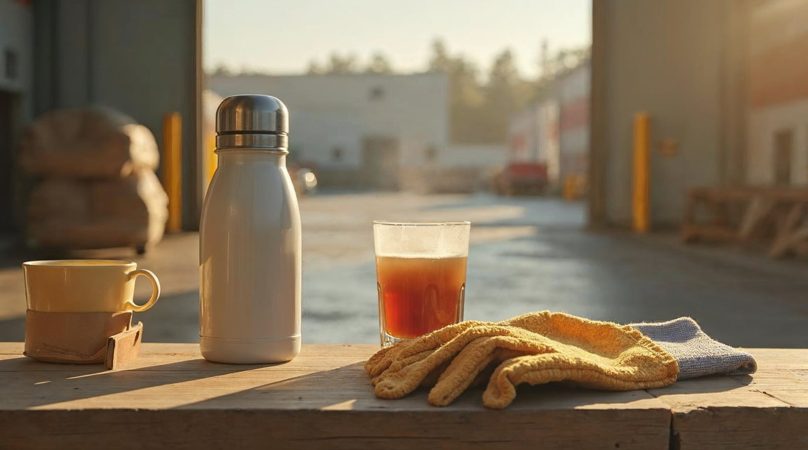
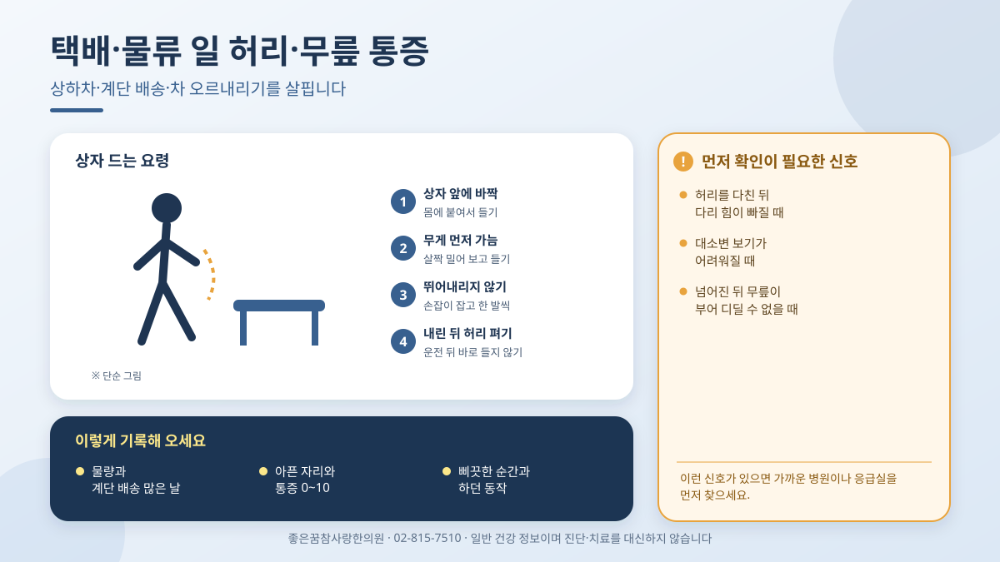

이종호 한의사 감수좋은꿈참사랑한의원 대표원장 (한의사 면허번호 19769)발행 2026-11-26 · 수정 2026-11-26
이 글의 차례
새벽 터미널에서 상자를 차에 싣고, 오전 내내 엘리베이터 없는 빌라 계단을 오르내립니다. 생수 묶음을 들고 4층에 올라섰을 때 무릎 앞쪽이 시큰하고, 차에 다시 올라타려고 몸을 숙이는 순간 허리가 찌릿합니다. 오늘 배송할 상자는 아직 절반이나 남았습니다.
택배와 물류 일을 하시는 분들은 하루에 몇백 번씩 허리를 숙이고 상자를 들어 올립니다. 시간 안에 물량을 끝내야 하니 쉬는 시간을 따로 챙기기 어렵고, 아파도 하루 쉬면 그만큼 수입과 동료의 부담이 걸려 있어 버티는 경우가 많습니다.
이 일은 무거운 것을 드는 일, 계단을 오르내리는 일, 차에 타고 내리는 일, 오래 운전하는 일이 하루에 모두 겹칩니다. 그래서 허리와 무릎이 가장 먼저 지치고, 어깨와 손목, 발목까지 함께 불편해지는 경우가 흔합니다.
이 글에서는 택배·물류 일의 어떤 동작이 어디에 부담을 주는지, 흔히 보이는 통증을 어떻게 나눠 보는지, 짐을 드는 요령과 일을 이어 가면서 해 볼 수 있는 것, 한의원에서 함께 살필 수 있는 부분을 정리해 보겠습니다.
택배·물류 일의 어떤 동작이 어디에 부담을 줄까요
상하차는 바닥이나 컨베이어에서 상자를 집어 들고 몸을 돌려 차나 수레에 싣는 동작의 반복입니다. 허리를 숙인 채 들고, 든 채로 허리를 비트는 일이 겹치면서 허리 근육과 디스크에 큰 부담이 갑니다. 무게가 제각각인 상자를 예상하지 못한 채 들면 허리를 삐끗하기 쉽습니다.
분류 작업은 컨베이어 앞에 오래 서서 팔을 뻗어 상자를 끌어오고 밀어내는 일입니다. 허리와 어깨, 종아리가 쉬지 못하고, 같은 방향으로만 몸을 돌리는 습관이 생기기 쉽습니다.
계단 배송은 무릎에 가장 큰 부담을 줍니다. 계단을 오를 때 무릎 앞쪽에는 몸무게의 몇 배에 이르는 힘이 실리고, 상자를 들고 있으면 그 힘은 더 커집니다. 내려올 때는 무릎이 몸을 받아 내며 브레이크 역할을 해서 무릎 앞과 안쪽이 시큰해지기 쉽습니다.
차에 오르내리는 일도 하루 수백 번 반복됩니다. 높은 적재함에 뛰어오르고 뛰어내리면 무릎과 발목에 충격이 쌓입니다. 운전석에 앉아 있다가 갑자기 내려 상자를 드는 일은 굳은 허리에 바로 부담을 주는 순간이 됩니다.
왜 허리와 무릎이 가장 먼저 지칠까요
허리는 상체의 무게를 받치면서 들어 올리는 힘을 다리에서 팔로 전달하는 다리 역할을 합니다. 허리를 굽힌 채 무거운 것을 들면, 몸에서 멀어질수록 허리가 받는 힘이 지렛대처럼 커집니다. 이것이 하루 수백 번 반복되면 허리 근육과 인대, 디스크가 회복할 틈이 없습니다.
무릎은 계단과 쪼그려 앉기에서 몸무게와 짐의 무게를 함께 받아 냅니다. 허벅지 앞 근육이 지치면 무릎뼈가 받는 압력이 커지고, 허벅지 근육이 무릎을 잘 받쳐 주지 못하면 무릎 안쪽과 앞쪽이 먼저 아파 옵니다.
시간에 쫓기는 것도 큰 이유입니다. 서두르다 보면 자세를 고를 틈 없이 상자를 낚아채듯 들고, 계단을 두 칸씩 뛰어오르고, 적재함에서 뛰어내리게 됩니다. 몸이 지친 오후일수록 이런 동작에서 다치기 쉽습니다.
새벽 근무와 불규칙한 끼니, 짧은 잠도 회복을 더디게 합니다. 쉬는 날이 하루뿐이면 몸이 충분히 회복되지 못한 채 다음 주를 시작하게 됩니다. 한의학에서는 이렇게 무거운 것을 오래 들고 많이 걸어 허리와 무릎이 지친 모습을 근육과 뼈를 주관하는 기운이 소모된 모습으로 설명해 왔습니다. 진찰할 때 참고하는 전통적인 관점이며 진단을 대신하지 않습니다.
택배·물류 일에서 자주 보이는 통증은 무엇인가요
택배와 물류 일을 하시는 분들께 자주 보이는 통증을 나눠 보면 다음과 같습니다. 한 분에게 둘 이상이 겹치는 경우도 흔합니다.
- 허리를 삐끗하는 급성 요추 염좌: 상자를 들다 갑자기 허리가 찌릿하며 움직이기 힘들어집니다.
- 허리 디스크로 인한 다리 저림: 허리 통증이 엉덩이를 지나 다리로 뻗치고, 기침하거나 허리를 숙일 때 심해집니다.
- 무릎 앞쪽이 시큰한 슬개대퇴통증: 계단을 오르내리거나 쪼그려 앉을 때 무릎뼈 주변이 아픕니다.
- 무릎 안쪽 아래가 아픈 거위발건염: 계단을 오를 때 무릎 안쪽 아래가 콕 집히듯 아픕니다.
- 무릎 반월상연골 문제: 무릎을 비틀 때 걸리거나 붓고, 쪼그려 앉기가 어려워집니다.
- 어깨와 손목, 발목의 통증: 상자를 끌어안고 들거나 적재함을 오르내리며 생깁니다.
허리 통증이 다리로 뻗치며 저리거나, 무릎이 자주 붓고 걸리는 느낌이 든다면 영상 검사가 필요한지 함께 살펴야 합니다. 이런 경우에는 정형외과 진료를 함께 권합니다.
상자는 어떻게 들어야 허리가 덜 힘들까요
가장 중요한 원칙은 상자를 몸에 바짝 붙여서 드는 것입니다. 같은 무게라도 몸에서 멀어질수록 허리가 받는 힘은 몇 배로 커집니다. 상자 앞에 바짝 다가간 뒤 들어야 합니다.
발을 어깨너비로 벌리고, 허리를 굽히기보다 무릎과 엉덩이를 함께 굽혀 몸을 낮추세요. 배에 힘을 준 채 상자를 몸에 붙이고 다리 힘으로 일어섭니다. 들기 전에 상자를 살짝 밀어 보아 무게를 가늠하면 예상치 못한 무게에 허리를 다치는 일을 줄일 수 있습니다.
들고 방향을 바꿀 때는 허리만 비틀지 말고 발을 옮겨 몸 전체를 돌리세요. 상하차에서 가장 흔하게 허리를 다치는 순간이 바로 든 채로 허리를 비트는 때입니다.
무거운 상자는 수레나 대차를 쓰고, 너무 무겁거나 큰 짐은 동료와 함께 드는 것이 좋습니다. 계단에서는 상자를 여러 개 겹쳐 들기보다 시야를 가리지 않을 만큼만 들고 한 번 더 오르내리는 편이 무릎과 발목을 지키는 길입니다.
운전하는 시간에는 무엇을 살펴야 할까요
배송 일은 상자를 드는 시간만큼 운전석에 앉아 있는 시간도 깁니다. 오래 앉아 있으면 허리 근육과 엉덩이가 굳고, 허벅지 뒤쪽이 짧아진 채로 머뭅니다. 그 상태로 차에서 내려 곧바로 상자를 들면 굳은 허리에 갑자기 큰 힘이 실립니다.
운전석은 엉덩이를 등받이 끝까지 붙여 앉고, 무릎이 엉덩이보다 살짝 높거나 비슷한 높이가 되도록 맞추세요. 등받이를 너무 눕히면 허리가 둥글게 말리고 목이 앞으로 빠집니다. 허리 뒤에 작은 쿠션이나 접은 수건을 대는 것도 도움이 됩니다.
차에서 내릴 때는 몸을 비틀며 한쪽 다리로 뛰어내리기보다, 엉덩이를 문 쪽으로 돌린 뒤 두 발을 함께 바닥에 디디고 일어서세요. 내린 뒤 허리를 한 번 뒤로 젖혀 펴고 상자를 드는 습관 하나가 하루 수백 번 쌓이면 차이가 큽니다.

계절에 따라 부담이 달라지기도 하나요
여름에는 땀을 많이 흘려 몸이 쉽게 지치고, 물이 부족하면 근육에 쥐가 나기 쉽습니다. 겨울에는 찬 공기에 근육이 굳은 채 일을 시작하게 되고, 얼어붙은 계단과 길에서 미끄러질 위험이 커집니다.
명절과 연말처럼 물량이 크게 늘어나는 시기에는 통증이 갑자기 심해지는 분이 많습니다. 이런 시기를 앞두고는 미리 몸을 쓰는 순서를 정리해 두고, 잠과 끼니를 평소보다 더 챙겨 주세요.
비가 오거나 눈이 온 날에는 상자가 젖어 미끄럽고 무게가 늘어나기도 합니다. 장갑은 손바닥에 미끄럼 방지 처리가 된 것을 고르고, 젖은 상자는 평소보다 천천히 들어 주세요. 손에서 상자가 미끄러지는 순간 허리와 손목이 갑자기 버티면서 다치는 경우가 많습니다.
먼저 이렇게 여쭙니다
처음 오시면 저는 대략 이런 순서로 여쭙니다. 미리 생각해 오시면 이야기가 훨씬 수월해집니다.
- 택배·물류 일은 몇 년째 하시고, 하루 몇 시간 일하시나요?
- 상하차, 분류, 배송 가운데 어떤 일을 주로 하시나요?
- 허리 통증이 엉덩이나 다리로 뻗치거나 저린가요?
- 무릎은 앞쪽, 안쪽, 뒤쪽 중 어디가 아픈가요? 붓거나 걸리는 느낌이 있나요?
- 상자를 들다 삐끗한 적이 있나요?
- 하루 운전 시간과 차에 오르내리는 횟수는 대략 어느 정도인가요?
- 끼니와 잠은 어떻게 챙기고 계신가요?
모든 질문에 정확히 답하지 못하셔도 괜찮습니다. 아픈 동작을 직접 보여 주시면, 허리와 무릎의 어느 각도에서 통증이 시작되는지 함께 확인할 수 있습니다.
일상에서 먼저 해 볼 수 있는 것
일터에서의 요령과 함께 퇴근 뒤의 시간도 회복에 중요합니다. 한꺼번에 다 하시기보다 맞는 것을 골라 보세요.
- 일을 시작하기 전 3~5분, 허리 돌리기와 무릎 굽혔다 펴기로 몸 데우기
- 적재함에서 뛰어내리지 말고 손잡이를 잡고 한 발씩 내리기
- 운전석에서 내린 직후에는 허리를 한 번 펴고 상자 들기
- 쿠션이 좋고 발목을 잡아 주는 작업화 신기
- 무릎 보호대나 허리 보호대는 상태에 맞게 골라 쓰기
- 퇴근 뒤 허벅지 앞뒤를 가볍게 늘이고 다리를 높게 두고 쉬기
허벅지 근육은 무릎을 지키는 가장 큰 보호대입니다. 쉬는 날 의자에 앉아 무릎을 쭉 펴고 몇 초 버티는 운동, 벽에 등을 기대고 살짝 무릎을 굽혀 버티는 운동을 아프지 않은 범위에서 조금씩 해 보세요. 하루 몇 분이라도 꾸준히 이어 가면 계단을 오르는 무릎이 한결 든든하게 느껴진다는 분이 많습니다.
끼니는 차 안에서라도 정해진 시각에 드시길 권합니다. 배가 고픈 채로 무거운 상자를 들다 보면 오후에 집중력이 떨어지고 다치기 쉽습니다. 물도 손이 닿는 곳에 두고 조금씩 자주 드세요. 단 음료나 에너지 음료로 끼니를 대신하면 잠시 힘이 나는 듯해도 오후에 더 크게 지치기 쉽습니다.
한의원에서 함께 살필 수 있는 경우
- 상자를 들다 허리를 삐끗한 뒤 뻣뻣함이 남아 있는 경우
- 일한 날 저녁마다 허리가 묵직하고 엉덩이가 당기는 경우
- 계단을 오르내릴 때 무릎 앞과 안쪽이 시큰한 경우
- 차에 오르내리며 발목과 무릎이 함께 피곤한 경우
- 새벽 근무와 불규칙한 끼니로 피로가 쌓인 경우
좋은꿈참사랑한의원에 오시면 먼저 아래 '먼저 확인이 필요한' 신호가 없는지부터 봅니다. 그다음 맥을 짚고, 허리와 골반, 무릎, 발목으로 이어지는 부담의 흐름을 차례로 만져 보며 확인합니다. 다리 저림이 있다면 신경이 눌리는 문제인지도 함께 살핍니다.
진찰한 내용을 바탕으로 침, 추나, 온열 관리, 한약 상담 가운데 지금 상태에 맞는 것을 정합니다. 근무 시간이 이른 분이 많아 쉬는 날이나 퇴근 시간에 맞춰 진료 간격을 정하는 경우가 많습니다. 한약을 상의할 때는 드시는 약을 모두 확인하고 신중하게 정합니다.
다리 힘이 빠지거나 저림이 심해지는 경우, 무릎이 자주 붓고 걸리는 경우에는 정형외과나 신경외과 진료를 먼저 권합니다. 일을 이어 가야 하는 상황을 잘 알기에, 쉬라고만 하기보다 일하는 방식을 함께 조정하는 쪽으로 이야기합니다.
이렇게 기록해 오시면 상담이 쉬워집니다
택배·물류 일의 통증은 물량과 배송 지역에 따라 크게 달라집니다. 2주 정도만 간단히 적어 보세요.
- 하루 물량과 계단 배송이 많았던 날 표시
- 아팠던 자리와 통증의 정도를 0에서 10으로
- 삐끗한 순간과 그때 하던 동작
- 다리 저림이나 무릎 붓기가 있었던 때
- 끼니를 챙긴 시각과 잠든 시각
- 쉬는 날의 통증 변화
기록을 나란히 놓고 보면 어떤 날 어디가 아픈지가 보이기 시작합니다. 그 흐름을 바탕으로 일의 순서와 몸을 쓰는 방법을 함께 다시 짜 볼 수 있습니다. 바쁜 날일수록 기록이 빠지기 쉬우니, 퇴근길 차 안에서 휴대폰 메모에 한 줄씩만 남겨 두셔도 충분합니다.
오래 일하는 몸을 위해서
택배와 물류 일은 다른 사람의 일상을 이어 주는 일입니다. 그 일을 하는 몸이 오래 버틸 수 있도록, 통증을 참고 넘기기보다 일찍 알아차리고 돌보는 것이 중요합니다.
이번 주에는 상자를 몸에 바짝 붙여 드는 것, 적재함에서 뛰어내리지 않는 것부터 시작해 보세요. 다음에 오시면 일주일 동안의 기록부터 함께 펼쳐 보겠습니다.
이런 증상은 먼저 확인이 필요합니다
- 무거운 짐을 들다 허리를 다친 뒤 다리에 힘이 빠지거나 대소변 보기가 어려워진 경우
- 계단에서 넘어지거나 삐끗한 뒤 무릎이 심하게 부어 디딜 수 없거나 모양이 변한 경우
이런 신호가 있으면 한의원보다 가까운 병원이나 응급실을 먼저 찾으세요.
함께 읽으면 좋은 글
- 허리를 삐끗해 움직이기 힘든 급성 요추 염좌는 첫 며칠 어떻게 살피나요?
- 허리 디스크 초기 신호와 다리 저림은 어떻게 구분하나요?
- 무릎 앞쪽, 무릎뼈 주변이 시큰한 슬개대퇴통증은 어떻게 살피나요?
- 무릎 반월상연골이 찢어졌다는 말을 들은 뒤에는 무엇을 살피고 어떻게 지내나요?
- 택배·배달 일로 차 안에서 급하게 끼니를 때울 때 속이 불편하면 어떻게 살피나요?

여쭙는 것
- 택배·물류 일은 몇 년째 하시고, 하루 몇 시간 일하시나요?
- 상하차, 분류, 배송 가운데 어떤 일을 주로 하시나요?
- 허리 통증이 엉덩이나 다리로 뻗치거나 저린가요?
생활에서 해 볼 것
- 일을 시작하기 전 3~5분, 허리 돌리기와 무릎 굽혔다 펴기로 몸 데우기
- 적재함에서 뛰어내리지 말고 손잡이를 잡고 한 발씩 내리기
- 운전석에서 내린 직후에는 허리를 한 번 펴고 상자 들기
한의원에서 함께 살필 것
- 상자를 들다 허리를 삐끗한 뒤 뻣뻣함이 남아 있는 경우
- 일한 날 저녁마다 허리가 묵직하고 엉덩이가 당기는 경우
- 계단을 오르내릴 때 무릎 앞과 안쪽이 시큰한 경우
먼저 확인이 필요한 신호
- 무거운 짐을 들다 허리를 다친 뒤 다리에 힘이 빠지거나 대소변 보기가 어려워진 경우
- 계단에서 넘어지거나 삐끗한 뒤 무릎이 심하게 부어 디딜 수 없거나 모양이 변한 경우
한눈에 보는 표
| 구분 | 핵심 |
|---|---|
| 여쭙는 것 | 택배·물류 일은 몇 년째 하시고, 하루 몇 시간 일하시나요? 상하차, 분류, 배송 가운데 어떤 일을 주로 하시나요? |
| 생활에서 해 볼 것 | 일을 시작하기 전 3~5분, 허리 돌리기와 무릎 굽혔다 펴기로 몸 데우기 적재함에서 뛰어내리지 말고 손잡이를 잡고 한 발씩 내리기 |
| 한의원에서 함께 살필 것 | 상자를 들다 허리를 삐끗한 뒤 뻣뻣함이 남아 있는 경우 일한 날 저녁마다 허리가 묵직하고 엉덩이가 당기는 경우 |
| 먼저 확인이 필요한 신호 | 무거운 짐을 들다 허리를 다친 뒤 다리에 힘이 빠지거나 대소변 보기가 어려워진 경우 계단에서 넘어지거나 삐끗한 뒤 무릎이 심하게 부어 디딜 수 없거나 모양이 변한 경우 |
자주 묻는 질문
허리를 삐끗했는데 물량 때문에 쉬기 어려워요.
다리 힘 빠짐이나 대소변 문제가 없다면 무거운 상자는 동료와 나누고, 아프지 않은 범위에서 조금씩 움직이는 쪽을 권합니다. 통증이 심하면 진찰을 받아 일의 양과 몸 쓰는 방법을 함께 정해 보세요.
허리 보호대를 하루 종일 차도 되나요?
무거운 것을 드는 시간에 잠시 쓰는 것은 도움이 될 수 있지만, 하루 종일 차고 있으면 허리 근육이 스스로 버티는 힘이 줄어들 수 있습니다. 상태에 맞게 쓰는 시간을 함께 정합니다.
계단을 내려갈 때 무릎이 더 아픈데 왜 그런가요?
내려갈 때는 무릎이 몸무게를 받아 내며 브레이크 역할을 해서 무릎 앞쪽에 부담이 커집니다. 한 칸씩 천천히 내려오고 난간을 잡는 것이 도움이 됩니다.
새벽에 일하고 오후에 와도 진료를 받을 수 있나요?
근무 시간에 맞춰 진료 시간을 정하는 분이 많습니다. 방문 전 전화로 진료 시간을 확인해 주세요.
무릎에 물이 찬 것 같은데 한의원에서 볼 수 있나요?
무릎이 자주 붓는다면 필요하다고 판단될 때 초음파로 살펴보고, 영상 검사나 처치가 필요해 보이면 정형외과 진료를 함께 권합니다.
좋은꿈참사랑한의원은 재진 때 지난번 이야기부터 이어서 여쭙니다. 진료시간과 예약은 오시는 길에서 확인하세요.
어디서 상담받을 수 있나요?
좋은꿈참사랑한의원은 서울 동작구 만양로2길 2 신성빌딩 3층·5층(서울 동작구 상도동, 7호선 상도역 3번 출구 근처)에 있습니다. 한의사 3명(이종호 대표원장, 조영기 수석진료원장, 정원영 진료원장)이 진료합니다. 진료시간은 평일 09:30~20:00(점심 13:00~14:00), 토·일·공휴일 09:30~15:00이며, 방문 전 전화로 확인을 권합니다. 예약은 네이버 예약, 카카오톡 상담, 전화 02-815-7510로 받습니다.
이 글은 일반적인 건강 정보이며 개인의 진단이나 치료를 대신하지 않습니다. 증상이 있거나 복용 중인 약이 있다면 진료를 통해 확인하세요. 치료 효과는 개인마다 다를 수 있습니다.
작성 기준: 일반적으로 알려져 있는 건강 정보를 참고해 정리했습니다(대표원장 감수). 증상 기록은 1~2주 동안 하루 1회, 비슷한 시간에 적어 오시면 지난 상태와 비교하기 쉽습니다.